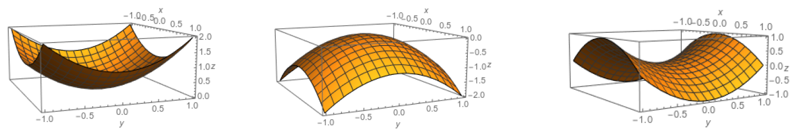

14 Functions of several variables
Reference: Hase (2022)
So far, differential calculus has been applied to functions of a single variable; in the next section, it will be extended to two or more, which require some notions of functions of several real variables. Although one can investigate general functions of real variables like \(f ∶\mathbb{R}^{n} \to \mathbb{R}^{m}\), this course examines the case \(m = 1\) only. In this case, the graph of \(f\) is given by
\[ G_{f} = \{(x_{1}, \ldots, x_{n}, \mathcal{z}) \in \mathbb{R}^{n + 1} : \mathcal{z} = f(x_{1}, \ldots, x_{n}) \} \]
where the case \(n = 2\) is an instructive one since one can visually sketch the graph. Some well-known graphs are depicted below.

The investigation of the variation of \(f\) is now a more complex task than in the single variable case since there is more than one direction (actually, there are infinite) to analyze the variation of \(f\). In cartesian coordinates, there are two natural directions (along the \(x\)-axis and \(y\)-axis) to consider, and a more general type of derivative is defined below.
14.1 Analysis of local maxima/minima
Reference: Hase (2022)
A function can display local maxima and minima in its graph. The analysis of the local behaviors will be considered here but restricted to the case of two independent variables. Nevertheless, the analysis can be extended to functions of more variables with the same idea.
Let \(f : \mathbb{R}^{2} \to \mathbb{R}\) be a differentiable function with graph \(\{(x, y , z) \in \mathbb{R}^{3} : \mathcal{z} = f(x, y)\}\). It can display regions where the graph reaches local maximum or minimum values, and let \((x_{0}, y_{0})\) be one of these points. As in the calculus of a single variable, it is expected that the inclination of the tangent there would vanish. More precisely, the tangent plane at \((x_{0}, y_{0})\) would be parallel to the \(xy\) plane. This means that the critical points \((x_{0}, y_{0})\), which are solutions of
\[ \cfrac{\partial f}{\partial x} (x, y) = \cfrac{\partial f}{\partial y} (x, y) = 0 \]
are candidates for local maximum or minimum. Hence, the formula above is a necessary condition to characterize an extremal point (maximum or minimum), but not a sufficient one. It is important to stress that
A point \(P(x_{0}, y_{0})\) is a local maximum if \(f(x, y) < f(x_{0}, y_{0})\) for any pair \((x, y)\) sufficiently close to \(P\) (but different from \(P\));
A point \(P(x_{0}, y_{0})\) is a local minimum if \(f(x, y) > f(x_{0}, y_{0})\) for any pair \((x, y)\) sufficiently close to \(P\) (but different from \(P\));
If \(P(x_{0}, y_{0})\) is an extremal point, the following analysis tells about its nature. The Taylor expansion of \(f\) around \(P\) leads to
\[ f(x, y) = f(x_{0}, y_{0}) + \cfrac{\partial f}{\partial x} (x_{0}, y_{0}) (x - x_{0}) + \cfrac{\partial f}{\partial y} (x_{0}, y_{0}) (y - y_{0}) + \]
\[ + \cfrac{1}{2!} \cfrac{\partial^{2} f}{\partial x^{2}} (x_{0}, y_{0}) (x - x_{0})^{2} + \cfrac{\partial^{2} f}{\partial x \partial y} (x_{0}, y_{0}) (x - x_{0}) (y - y_{0}) + \cfrac{1}{2!} \cfrac{\partial^{2} f}{\partial y^{2}} (x_{0}, y_{0}) (y - y_{0})^{2} + \cdots \]
Inserting the two formulas above and introducing the notations
\[ A := \cfrac{\partial^{2} f}{\partial x^{2}} (x_{0}, y_{0}), \quad B := \cfrac{\partial^{2} f}{\partial x \partial y} (x_{0}, y_{0}), \quad C := \cfrac{\partial^{2} f}{\partial y^{2}} (x_{0}, y_{0}), \quad \Delta x := x - x_{0} \quad and \quad \Delta y := y - y_{0} \]
one has
\[ \Delta f := f(x, y) - f(x_{0}, y_{0}) = \cfrac{A}{2} \Delta x^{2} + B \Delta x \Delta y + \cfrac{C}{2} \Delta y^{2} + \mathcal{O} (\Delta x^{3}, \Delta y^{3}) \tag{i} \]
For \(\Delta x\) and \(\Delta y\) sufficiently close to zero (which means that \((x, y)\) is close to \((x_{0}, y_{0})\)), the sign of \(\Delta f\) in the formula above is governed by \(A\), \(B\) and \(C\), as seen below. According to the definition above, \(\Delta f > 0\) and \(\Delta f < 0\) implies \((x_{0}, y_{0})\) being a local minimum and maximum, respectively.
The possible cases are listed below.
1. \(A \ \text{and} \ C \ \text{are not both zero}\). Assume that \(A \neq 0\) (the case \(C \neq 0\) can be worked out \(mutatis \ mutandis\)). Then, \(\Delta f\) can be cast as
\[ \Delta f = \cfrac{A}{2} \left [ \Delta x + \cfrac{B}{A} \Delta y \right ] + \cfrac{AC - B^{2}}{2A} \Delta y^{2} + \mathcal{O} (\Delta x^{3}, \Delta y^{3}) = \]
\[ = \cfrac{A}{2} \Delta w^{2} + \cfrac{AC - B^{2}}{2A} \Delta y^{2} + \mathcal{O} (\Delta x^{3}, \Delta y^{3}) \]
where,
\[ \Delta w := \Delta x + \cfrac{B}{A} \Delta y \]
The analysis will now be divided into some subcases.
(a).\(AC - B^{2} = 0\). In this case, no general conclusion can be stated about the nature of \((x_{0}, y_{0})\), since \(\Delta w\) can be zero without letting \(\Delta x = \Delta y = 0\) (which is the critical point). When this happens, the sign of \(\Delta f = \cfrac{A}{2} \Delta w^{2} + \mathcal{O} (\Delta x^{3}, \Delta y^{3}) = \mathcal{O} (\Delta x^{3}, \Delta y^{3})\) is decided by the third order terms, which requires further investigations.
(b).\(AC - B^{2} < 0\). In this case, the quadratic form in \((i)\) can be either positive or negative, depending on the chosen region in the neighborhood of \((x_{0}, y_{0})\). Therefore, the condition \(AC - B^{2}\) implies the critical point being a saddle-point.
(c).\(AC - B^{2} > 0\). In this case, both quadratic terms in \((i)\) have the same sign and the classification of the critical point depends on the sign of \(A\) only. If \(A > 0 \ (A < 0)\), then \(\Delta f > 0 \ (\Delta f < 0)\), which means that \((x_{0}, y_{0})\) is a local minimum (maximum).
2. \(A = C = 0\). Here, \(\Delta f = B \Delta x \Delta y + \mathcal{O} (\Delta x^{3}, \Delta y^{3})\). The analysis will now be divided into some subcases.
(a). If \(B = 0\), which implies \(AC - B^{2} = 0\), no general conclusion can be stated about the nature of \((x_{0}, y_{0})\), since it would depend on the third order terms.
(b). if \(B \neq 0\), which implies \(AC - B^{2} < 0\), the leading term, \(B \Delta x \Delta y\) can be either positive or negative, depending on the \((x_{0}, y_{0})\). In this situation, \((x_{0}, y_{0})\) is a saddle-point, where it can be seen as a local maximum according to some set of points \((x, y)\), but it can also be treated as a local minimum if another set of points \((x, y)\) is chosen.
All the cases above can be summarized by:
\[ A, B, C \begin{cases} AC - B^{2} = 0 \quad \quad \quad \quad \quad \ \ \ : \quad \text{inconclusive (based on the second-order terms only)} \\ AC - B^{2} < 0 \quad \quad \quad \quad \quad \ \ \ : \quad (x_{0}, y_{0}) \ \text{is a saddle point} \\ AC - B^{2} > 0 \ \text{and} \ A > 0 \quad : \quad (x_{0}, y_{0}) \ \text{is a local minimum} \\ AC - B^{2} > 0 \ \text{and} \ A < 0 \quad : \quad (x_{0}, y_{0}) \ \text{is a local maximum} \end{cases} \]
Note that \(AC − B^{2} > 0\) and \(A = 0\) are incompatible. Furthermore, \(AC − B^{2} > 0\) and \(A > 0\) imply \(C > 0\) (in the same fashion, \(AC − B^{2} > 0\) and \(A < 0\) lead to \(C < 0\)).
Example: Analyzing the critical points of \(f(x, y) = x^{3} − 3xy^{2} + y^{3} + 3y\)
Firstly, the critical points, which are solutions of
\[ \begin{cases} \cfrac{\partial f}{\partial x} = 3x^{2} - 3y^{2} = 0 \\ \cfrac{\partial f}{\partial y} = -6xy + 3y^{2} + 3 = 0 \end{cases} \]
The critical points are \((−1, −1)\) or \((1, 1)\). Then, from
\[ A = \cfrac{\partial^{2} f}{\partial x^{2}} (x_{0}, y_{0}) = 6x_{0}, \quad B = \cfrac{\partial^{2} f}{\partial x \partial y} (x_{0}, y_{0}) = -6y_{0}, \quad \text{and} \quad C = \cfrac{\partial^{2} f}{\partial y^{2}} (x_{0}, y_{0}) = - 6x_{0} + 6y_{0} \]
one sees that
\[ AC - B^{2} = 36y_{0} (- x^{2}_{0} + x_{0}y_{0} - y^{2}_{0}) = \begin{cases} \ \ 36 \quad \quad , \quad \text{if} \ (x_{0}, y_{0}) = (-1, -1) \\ \ - 36 \quad , \quad \text{if} \ (x_{0}, y_{0}) = (1, 1) \end{cases} \]
Thus, \((1, 1)\) is a saddle-point \(AC - B^{2} < 0\). Furthermore, \((−1, −1)\) is a local maximum point, since \(A = −6 < 0\) and \(AC - B^{2} < 0\).